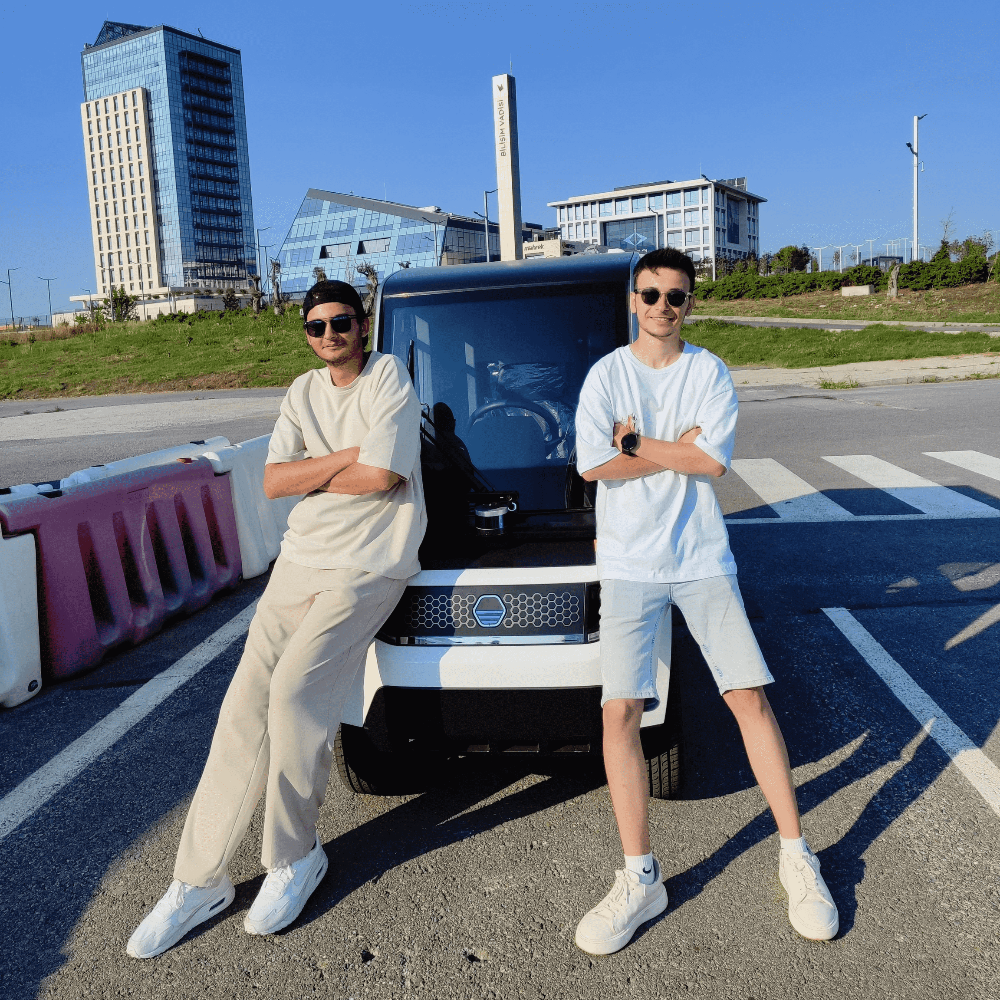
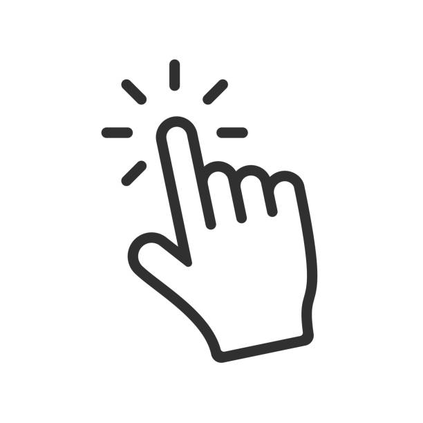
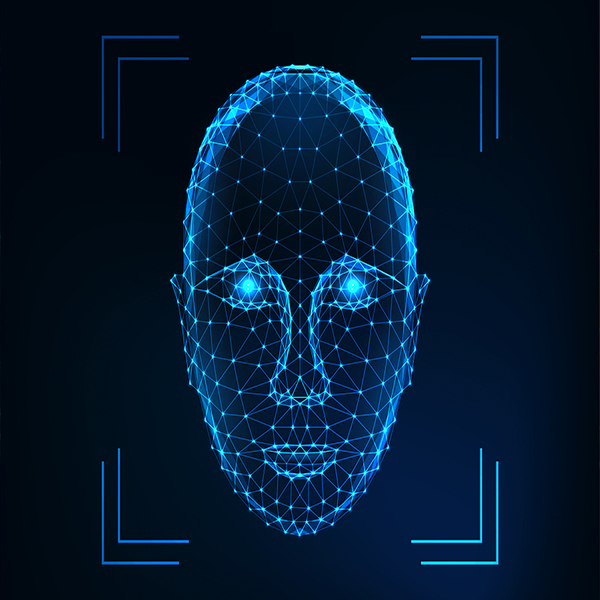
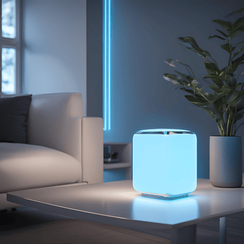
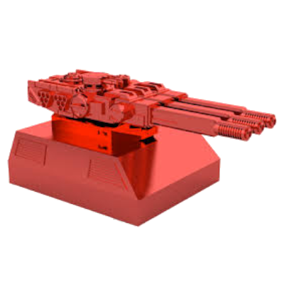

Teknofest Robotaksi Binek Otonom
I participated as a finalist in the Teknofest Robotaxi Autonomous Vehicle Competition. During this process, I developed autonomous driving algorithms and worked on real-time data processing and sensor integration. I designed AI and ROS-based systems to enable safe and efficient vehicle movement. This competition was an invaluable experience that enhanced my engineering skills and allowed me to contribute to the future of autonomous vehicle technology.
I participated as a finalist in the Teknofest Robotaxi Autonomous Vehicle Competition. During this process, I developed autonomous driving algorithms and worked on real-time data processing and sensor integration. I designed AI and ROS-based systems to enable safe and efficient vehicle movement. This competition was an invaluable experience that enhanced my engineering skills and allowed me to contribute to the future of autonomous vehicle technology.

Teknofest Ulaşımda Yapay Zeka
I participated in the Teknofest Artificial Intelligence in Transportation Competition, where I developed AI-based solutions to improve transportation efficiency and safety. This experience allowed me to work on advanced algorithms, real-time data analysis, and intelligent transportation systems. The competition provided me with valuable insights into the role of artificial intelligence in shaping the future of mobility.
I participated in the Teknofest Artificial Intelligence in Transportation Competition, where I developed AI-based solutions to improve transportation efficiency and safety. This experience allowed me to work on advanced algorithms, real-time data analysis, and intelligent transportation systems. The competition provided me with valuable insights into the role of artificial intelligence in shaping the future of mobility.

Hand Controlled Mouse
I developed a Hand-Controlled Mouse project, where hand gestures replace traditional mouse functions, allowing users to control cursor movement and perform clicks with natural hand motions. Using computer vision and machine learning, I designed a system that detects and interprets hand gestures in real time, providing an intuitive, touchless interaction experience. This project deepened my understanding of human-computer interaction and the potential of gesture-based interfaces.
I developed a Hand-Controlled Mouse project, where hand gestures replace traditional mouse functions, allowing users to control cursor movement and perform clicks with natural hand motions. Using computer vision and machine learning, I designed a system that detects and interprets hand gestures in real time, providing an intuitive, touchless interaction experience. This project deepened my understanding of human-computer interaction and the potential of gesture-based interfaces.

Facial Recognition Attendance
I created a Face Attendance System that automates attendance tracking using facial recognition. This project uses computer vision and machine learning algorithms to identify and verify individuals' faces, ensuring accurate and efficient attendance logging without manual intervention. Through this project, I gained hands-on experience in facial recognition technology and developed a practical solution for streamlined attendance management.
I created a Face Attendance System that automates attendance tracking using facial recognition. This project uses computer vision and machine learning algorithms to identify and verify individuals' faces, ensuring accurate and efficient attendance logging without manual intervention. Through this project, I gained hands-on experience in facial recognition technology and developed a practical solution for streamlined attendance management.

Voice Assistant
I developed a Voice Assistant project capable of controlling any device connected to the internet. This assistant leverages natural language processing to interpret commands and integrates with smart home devices, IoT systems, and online services. From adjusting lights and thermostats to managing online tasks and reminders, it enables seamless, hands-free control over a range of connected devices. Through this project, I gained expertise in IoT integration, API utilization, and conversational AI, creating an assistant that brings convenience and automation to everyday life.
I developed a Voice Assistant project capable of controlling any device connected to the internet. This assistant leverages natural language processing to interpret commands and integrates with smart home devices, IoT systems, and online services. From adjusting lights and thermostats to managing online tasks and reminders, it enables seamless, hands-free control over a range of connected devices. Through this project, I gained expertise in IoT integration, API utilization, and conversational AI, creating an assistant that brings convenience and automation to everyday life.

Teknofest Hava Savunma Sistemleri
In the Teknofest Air Defense Systems Competition, I developed a turret system capable of tracking targets, identifying friend or foe, and neutralizing threats. Using AI and computer vision, I designed a defense mechanism that automatically detects, classifies, and follows balloon targets. The system quickly identifies threats and responds effectively, offering a strategic solution in air defense technology. This experience allowed me to enhance my engineering skills in the field of defense systems.
In the Teknofest Air Defense Systems Competition, I developed a turret system capable of tracking targets, identifying friend or foe, and neutralizing threats. Using AI and computer vision, I designed a defense mechanism that automatically detects, classifies, and follows balloon targets. The system quickly identifies threats and responds effectively, offering a strategic solution in air defense technology. This experience allowed me to enhance my engineering skills in the field of defense systems.